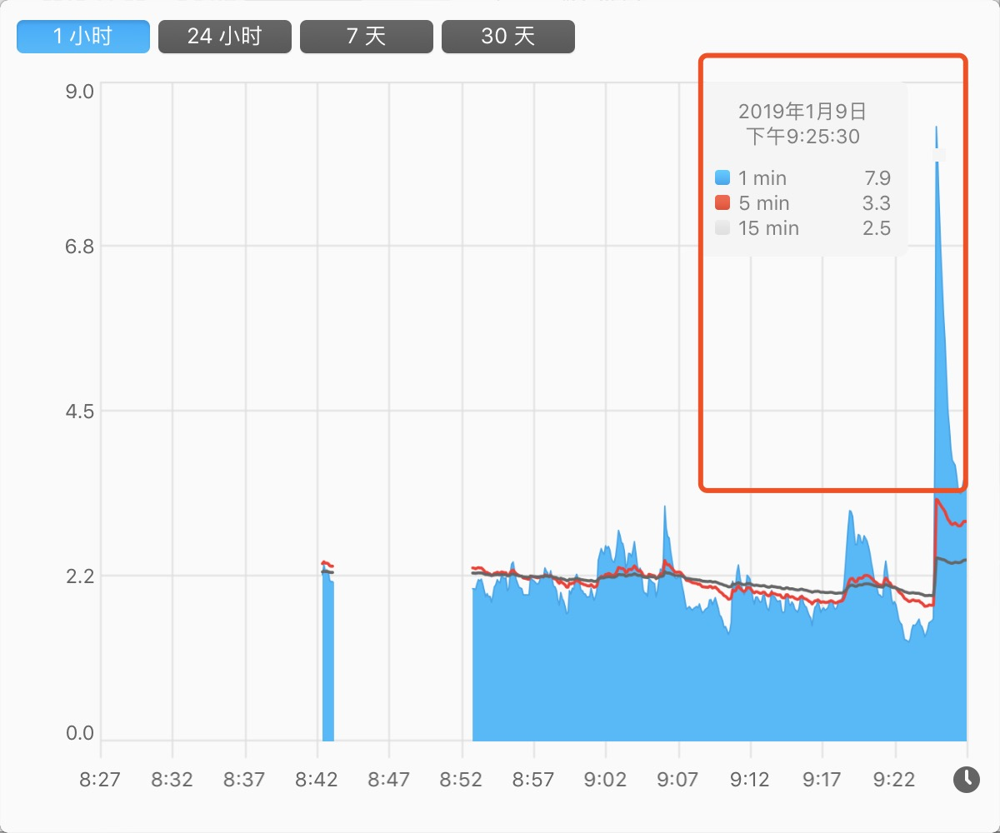
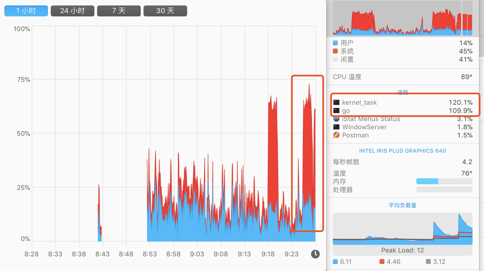
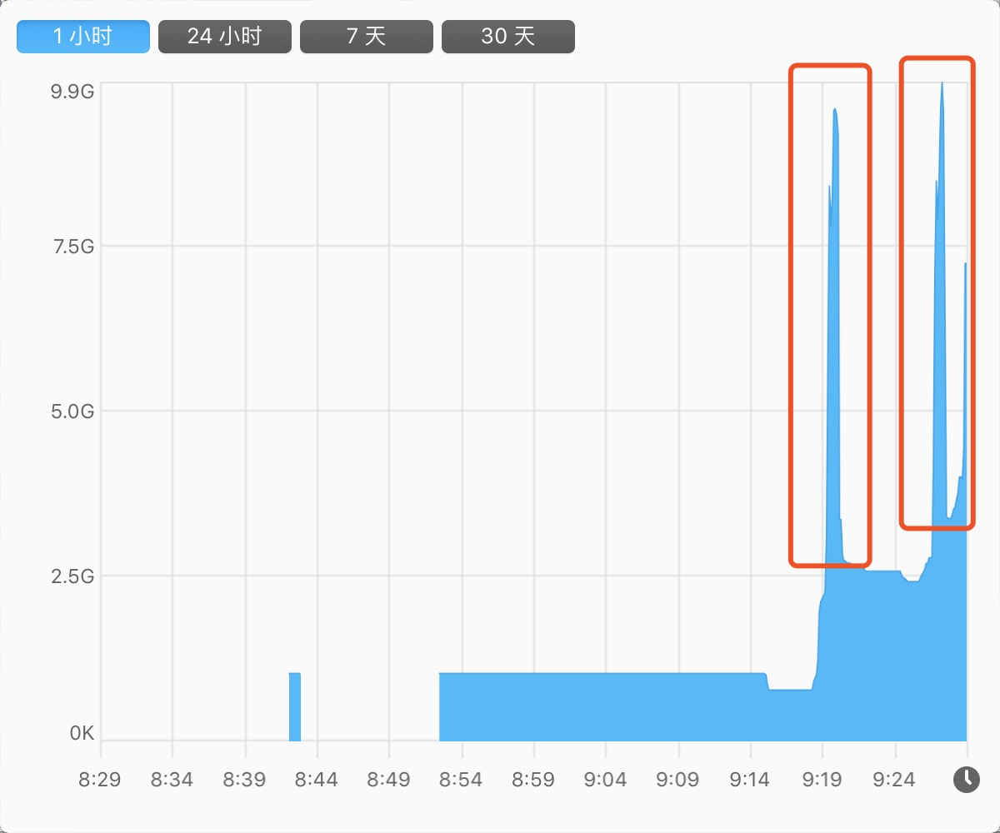

1.6 來，控制一下 goroutine 的併發數量
問題
func main() {
userCount := math.MaxInt64
for i := 0; i < userCount; i++ {
go func(i int) {
// 做一些各种各样的业务逻辑处理
fmt.Printf("go func: %d\n", i)
time.Sleep(time.Second)
}(i)
}
}
在這裡，假設 userCount 是一個外部傳入的引數（不可預測，有可能值非常大），有人會全部丟進去迴圈。想著全部都併發 goroutine 去同時做某一件事。覺得這樣子會效率會更高，對不對！
那麼，你覺得這裡有沒有什麼問題？
噩夢般的開始
當然，在特定場景下，問題可大了。因為在本文被丟進去同時併發的可是一個極端值。我們可以一起觀察下圖的指標分析，看看情況有多 “崩潰”。下圖是上述程式碼的表現：
輸出結果
...
go func: 5839
go func: 5840
go func: 5841
go func: 5842
go func: 5915
go func: 5524
go func: 5916
go func: 8209
go func: 8264
signal: killed
如果你自己執行過程式碼，在 “輸出結果” 上你會遇到如下問題：
- 系統資源佔用率不斷上漲
- 輸出一定數量後：控制檯就不再重新整理輸出最新的值了
- 訊號量：signal: killed
系統負載

CPU

短時間內系統負載暴增
虛擬記憶體

短時間內佔用的虛擬記憶體暴增
top
PID COMMAND %CPU TIME #TH #WQ #PORT MEM PURG CMPRS PGRP PPID STATE BOOSTS
...
73414 test 100.2 01:59.50 9/1 0 18 6801M+ 0B 114G+ 73403 73403 running *0[1]
小結
如果仔細看過監控工具的示意圖，就可以知道其實我間隔的執行了兩次，能看到系統間的使用率幅度非常大。當程序被殺掉後，整體又恢復為正常值
在這裡，我們回到主題，就是在不控制併發的 goroutine 數量 會發生什麼問題？大致如下：
- CPU 使用率浮動上漲
- Memory 佔用不斷上漲。也可以看看 CMPRS，它表示程序的壓縮資料的位元組數。已經到達 114G+ 了
- 主程序崩潰（被殺掉了）
簡單來說，“崩潰” 的原因就是對系統資源的佔用過大。常見的比如：開啟檔案數（too many files open）、記憶體佔用等等
危害
對該臺伺服器產生非常大的影響，影響自身及相關聯的應用。很有可能導致不可用或響應緩慢，另外啟動了複數 “失控” 的 goroutine，導致程式流轉混亂
解決方案
在前面花了大量篇幅，渲染了在存在大量併發 goroutine 數量時，不控制的話會出現 “嚴重” 的問題，接下來一起思考下解決方案。如下：
- 控制/限制 goroutine 同時併發執行的數量
- 改變應用程式的邏輯寫法（避免大規模的使用系統資源和等待）
調整服務的硬體設定、最大開啟數、記憶體等閾值
控制 goroutine 併發數量
接下來正式的開始解決這個問題，希望你認真閱讀的同時加以思考，因為這個問題在實際專案中真的是太常見了！
問題已經丟擲來了，你需要做的是想想有什麼辦法解決這個問題。建議你自行思考一下技術方案。再接著往下看 :-)
嘗試 chan
func main() {
userCount := 10
ch := make(chan bool, 2)
for i := 0; i < userCount; i++ {
ch <- true
go Read(ch, i)
}
//time.Sleep(time.Second)
}
func Read(ch chan bool, i int) {
fmt.Printf("go func: %d\n", i)
<- ch
}
輸出結果：
go func: 1
go func: 2
go func: 3
go func: 4
go func: 5
go func: 6
go func: 7
go func: 8
go func: 0
嗯，我們似乎很好的控制了 2 個 2 個的 “順序” 執行多個 goroutine。但是，問題出現了。你仔細數一下輸出結果，才 9 個值？
這明顯就不對。原因出在當主協程結束時，子協程也是會被終止掉的。因此剩餘的 goroutine 沒來及把值輸出，就被送上路了（不信你把 time.Sleep 開啟看看，看看輸出數量）
嘗試 sync
...
var wg = sync.WaitGroup{}
func main() {
userCount := 10
for i := 0; i < userCount; i++ {
wg.Add(1)
go Read(i)
}
wg.Wait()
}
func Read(i int) {
defer wg.Done()
fmt.Printf("go func: %d\n", i)
}
嗯，單純的使用 sync.WaitGroup 也不行。沒有控制到同時併發的 goroutine 數量（代指達不到本文所要求的目標）
小結
單純簡單使用 channel 或 sync 都有明顯缺陷，不行。我們再看看元件配合能不能實作
嘗試 chan + sync
...
var wg = sync.WaitGroup{}
func main() {
userCount := 10
ch := make(chan bool, 2)
for i := 0; i < userCount; i++ {
wg.Add(1)
go Read(ch, i)
}
wg.Wait()
}
func Read(ch chan bool, i int) {
defer wg.Done()
ch <- true
fmt.Printf("go func: %d, time: %d\n", i, time.Now().Unix())
time.Sleep(time.Second)
<-ch
}
輸出結果：
go func: 9, time: 1547911938
go func: 1, time: 1547911938
go func: 6, time: 1547911939
go func: 7, time: 1547911939
go func: 8, time: 1547911940
go func: 0, time: 1547911940
go func: 3, time: 1547911941
go func: 2, time: 1547911941
go func: 4, time: 1547911942
go func: 5, time: 1547911942
從輸出結果來看，確實實作了控制 goroutine 以 2 個 2 個的數量去執行我們的 “業務邏輯”，當然結果集也理所應當的是亂序輸出
方案一：簡單 Semaphore
在確立了簡單使用 chan + sync 的方案是可行後，我們重新將流轉邏輯封裝為 gsema，主程式變成如下：
import (
"fmt"
"time"
"github.com/EDDYCJY/gsema"
)
var sema = gsema.NewSemaphore(3)
func main() {
userCount := 10
for i := 0; i < userCount; i++ {
go Read(i)
}
sema.Wait()
}
func Read(i int) {
defer sema.Done()
sema.Add(1)
fmt.Printf("go func: %d, time: %d\n", i, time.Now().Unix())
time.Sleep(time.Second)
}
分析方案
在上述程式碼中，程式執行流程如下：
- 設定允許的併發數目為 3 個
- 迴圈 10 次，每次啟動一個 goroutine 來執行任務
- 每一個 goroutine 在內部利用
sema進行調控是否阻塞 - 按允許併發數逐漸釋出 goroutine，最後結束任務
看上去人模人樣，沒什麼嚴重問題。但卻有一個 “大” 坑，認真看到第二點 “每次啟動一個 goroutine” 這句話。這裡有點問題，提前產生那麼多的 goroutine 會不會有什麼問題，接下來一起分析下利弊，如下：
利
- 適合量不大、複雜度低的使用場景
- 幾百幾千個、幾十萬個也是可以接受的（看具體業務場景）
- 實際業務邏輯在執行前就已經被阻塞等待了（因為併發數受限），基本實際業務邏輯損耗的效能比 goroutine 本身大
- goroutine 本身很輕便，僅損耗極少許的記憶體空間和排程。這種等待響應的情況都是躺好了，等待任務喚醒
- Semaphore 操作複雜度低且流轉簡單，容易控制
弊
- 不適合量很大、複雜度高的使用場景
- 有幾百萬、幾千萬個 goroutine 的話，就浪費了大量排程 goroutine 和記憶體空間。恰好你的伺服器也接受不了的話
- Semaphore 操作複雜度提高，要管理更多的狀態
小結
- 基於什麼業務場景，就用什麼方案去做事
- 有足夠的時間，允許你去追求更優秀、極致的方案（用第三方庫也行）
用哪種方案，我認為主要基於以上兩點去思考，都是 OK 的。沒有對錯，只有當前業務場景能不能接受，這個預先啟動的 goroutine 數量你的系統是否能夠接受
當然了，常見/簡單的 Go 應用採用這類技術方案，基本就能解決問題了。因為像本文第一節 “問題” 如此超巨大數量的情況，情況很少。其並不存在那些 “特殊性”。因此用這個方案基本 OK
靈活控制 goroutine 併發數量
小手一緊。隔壁老王發現了新的問題。“方案一” 中，在輸入輸出一體的情況下，在常見的業務場景中確實可以
但，這次新的業務場景比較特殊，要控制輸入的數量，以此達到改變允許併發執行 goroutine 的數量。我們仔細想想，要做出如下改變：
- 輸入/輸出要抽離，才可以分別控制
- 輸入/輸出要可變，理所應當在 for-loop 中（可設定數值的地方）
- 允許改變 goroutine 併發數量，但它也必須有一個最大值（因為允許改變是相對）
方案二：靈活 chan + sync
package main
import (
"fmt"
"sync"
"time"
)
var wg sync.WaitGroup
func main() {
userCount := 10
ch := make(chan int, 5)
for i := 0; i < userCount; i++ {
wg.Add(1)
go func() {
defer wg.Done()
for d := range ch {
fmt.Printf("go func: %d, time: %d\n", d, time.Now().Unix())
time.Sleep(time.Second * time.Duration(d))
}
}()
}
for i := 0; i < 10; i++ {
ch <- 1
ch <- 2
//time.Sleep(time.Second)
}
close(ch)
wg.Wait()
}
輸出結果：
...
go func: 1, time: 1547950567
go func: 3, time: 1547950567
go func: 1, time: 1547950567
go func: 2, time: 1547950567
go func: 2, time: 1547950567
go func: 3, time: 1547950567
go func: 1, time: 1547950568
go func: 2, time: 1547950568
go func: 3, time: 1547950568
go func: 1, time: 1547950568
go func: 3, time: 1547950569
go func: 2, time: 1547950569
在 “方案二” 中，我們可以隨時隨地的根據新的業務需求，做如下事情：
- 變更 channel 的輸入數量
- 能夠根據特殊情況，變更 channel 的迴圈值
- 變更最大允許併發的 goroutine 數量
總的來說，就是可控空間都儘量放開了，是不是更加靈活了呢 :-)
方案三：第三方庫
比較成熟的第三方庫也不少，基本都是以生成和管理 goroutine 為目標的池工具。我簡單列了幾個，具體建議大家閱讀下原始碼或者多找找，原理相似
總結
在本文的開頭，我花了大力氣（極端數量），告訴你同時併發過多的 goroutine 數量會導致系統佔用資源不斷上漲。最終該服務崩盤的極端情況。為的是希望你今後避免這種問題，給你留下深刻的印象
接下來我們以 “控制 goroutine 併發數量” 為主題，展開了一番分析。分別給出了三種方案。在我看來，各具優缺點，我建議你挑選合適自身場景的技術方案就可以了
因為，有不同型別的技術方案也能解決這個問題，千人千面。本文推薦的是較常見的解決方案，也歡迎大家在評論區繼續補充 :-)